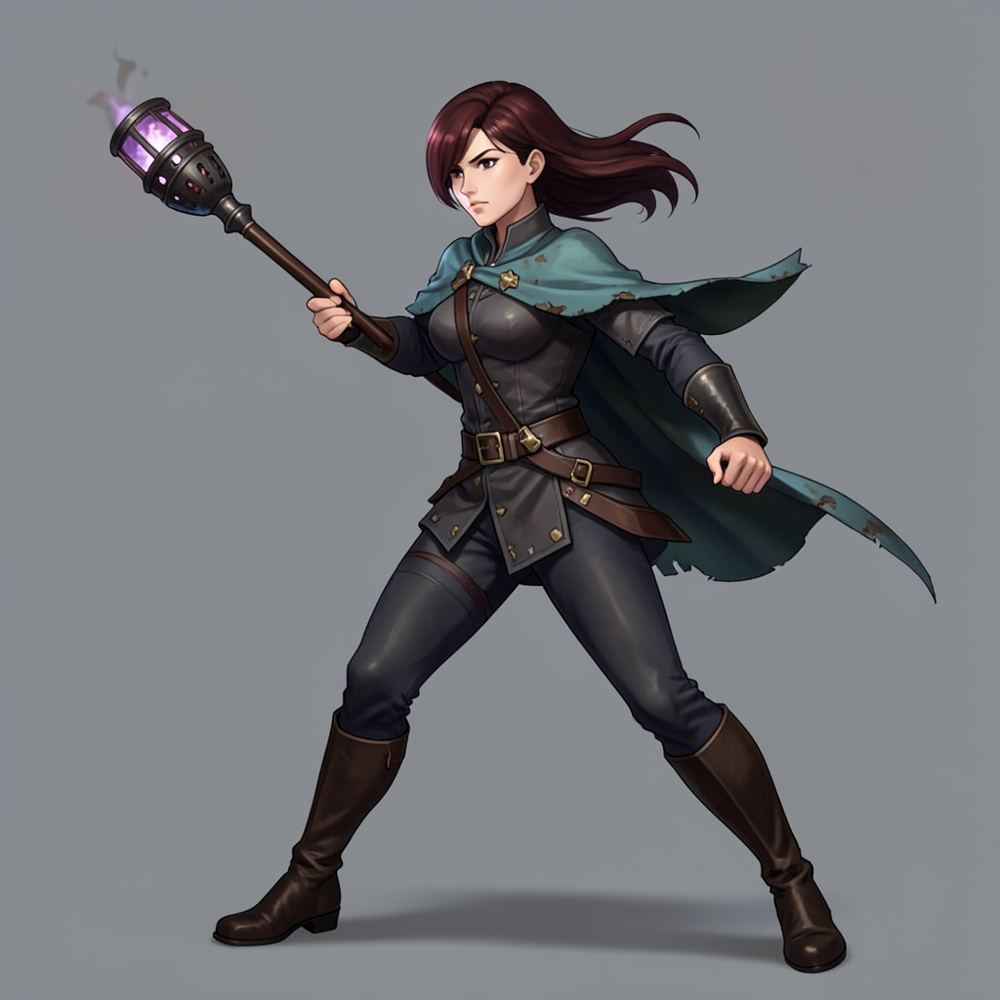
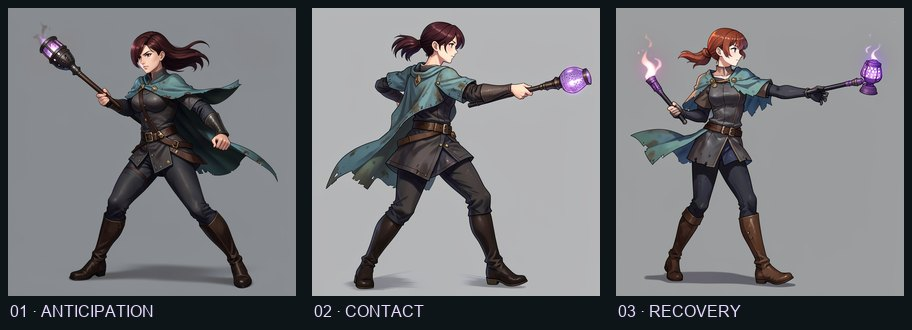
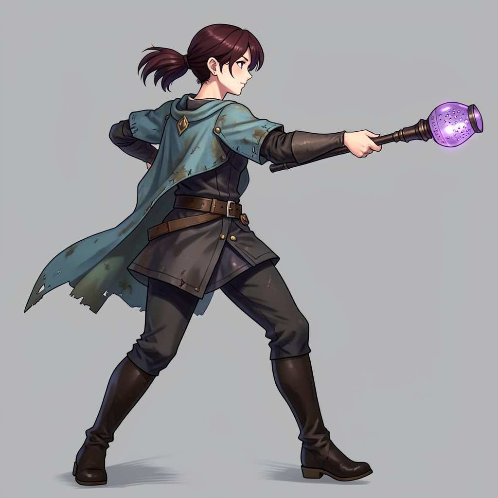
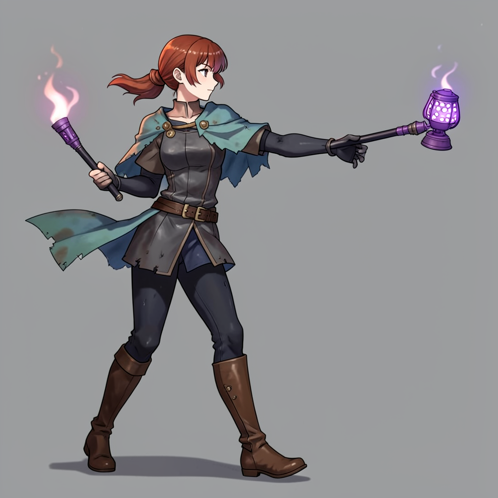
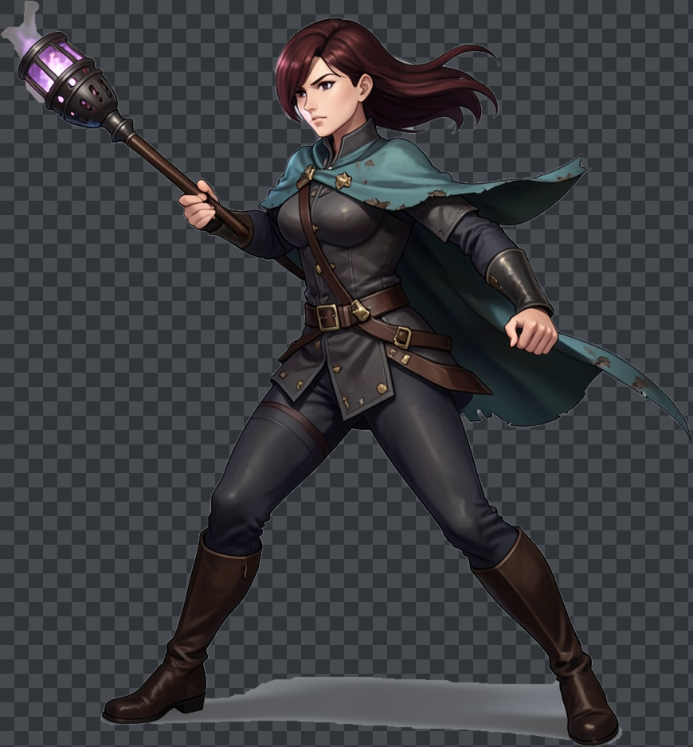

Concept pose · anticipation
Wind-up
Face, long dark auburn hair, teal mantle, dark outfit and single lantern read as one defined design. Opaque grey background; no game-ready alpha.
A real local-generation test of anticipation → contact → recovery. It exposes the exact failure we needed to catch: independent text-to-image poses do not preserve protagonist identity or torch ownership well enough to assemble into an attack.

User-reviewed contact sheet · each panel is an independent generated concept image. It is not an animation playback or game-scale character test.

Face, long dark auburn hair, teal mantle, dark outfit and single lantern read as one defined design. Opaque grey background; no game-ready alpha.

Clothing and palette are broadly related, but facing and hair styling shift; the lantern is stretched into a mace-like prop. A contact pose is not shown against a target.

Hair changes to reddish ponytail, face and costume details drift, lantern design grows, and a second flaming torch appears in the opposite hand. This does not read as recovery from the previous strike.
Interpretation: these metrics only report canvas/anchor/difference signals. They do not override the visible semantic continuity failures.
To test whether one stable pose could become riggable, a local GrabCut background-removal pass isolated the whole character from the flat grey field. The preview shows the limitation: the whole illustration remains one connected layer, and the ground shadow plus a smoke remnant stay attached. There are no separately riggable limbs, torch, or hair layers; moving this cutout would only move the entire pose card.
Decision: preserve this as a background-removal experiment only. It is not a game-ready sprite, a cutout rig, or character animation.

Obtain or author a clean approved layered source with independent torso, arm/hand/torch, legs, head/hair, mantle, and separate shadow/VFX—or a stable rigged model. Lock the face, long auburn hair, teal mantle, outfit, lantern silhouette and right-hand grip. Only then make and review anticipation/contact/recovery as motion at gameplay scale.